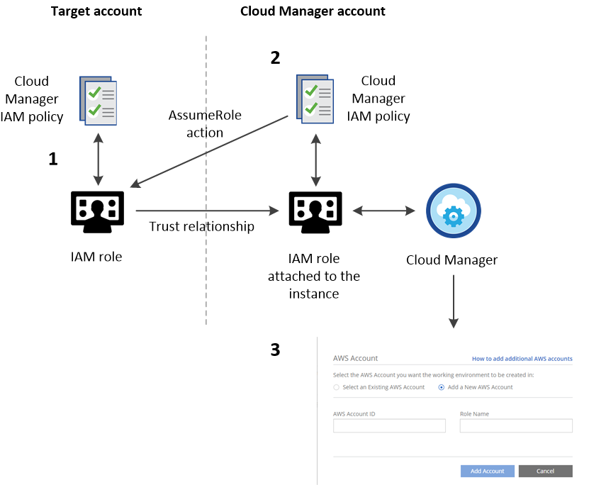
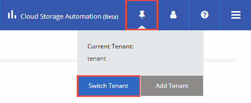
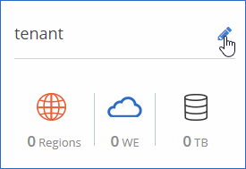

Die neueste Version finden Sie in den Dokumenten.
Einrichten von Cloud Manager
Mitwirkende Laden Sie dieses Thema als PDF herunter
Laden Sie dieses Thema als PDF herunter
Sie können Cloud Volumes ONTAP Systeme direkt nach der Implementierung von Cloud Manager erstellen. Möglicherweise möchten Sie jedoch zunächst eine zusätzliche Einrichtung durchführen, indem Sie den AWS Key Management Service einrichten, ein HTTPS-Zertifikat installieren und vieles mehr.
- Hinzufügen zusätzlicher Azure Abonnements zu Cloud Manager
- Hinzufügen weiterer AWS-Konten zu Cloud Manager
- Einrichten des AWS KMS
- Installieren eines HTTPS-Zertifikats für sicheren Zugriff
- Hinzufügen von Benutzern zu Cloud Manager
- Verknüpfen von Mandanten mit einem NetApp Support Site-Konto
- Einrichten von AWS-Fakturierung und Kostenmanagement für Cloud Manager
Hinzufügen zusätzlicher Azure Abonnements zu Cloud Manager
Wenn Sie Cloud Volumes ONTAP Systeme in mehreren Azure Abonnements bereitstellen möchten, müssen Sie Berechtigungen für diese Abonnements hinzufügen.
Die folgenden Schritte gelten für die Implementierung von Cloud Manager über NetApp Cloud Central. Bei der Implementierung von Cloud Manager erstellte Cloud Central die Rolle "OnCommand Cloud Manager Operator" und wies sie der virtuellen Cloud Manager-Maschine zu.
-
Melden Sie sich beim Azure Portal an.
-
Öffnen Sie den Abonnementservice, und wählen Sie dann das Abonnement aus, in dem Sie Cloud Volumes ONTAP Systeme implementieren möchten.
-
Klicken Sie auf Zugriffssteuerung (IAM) .
-
Klicken Sie auf Hinzufügen, und fügen Sie die Berechtigungen hinzu:
-
Wählen Sie die Rolle OnCommand Cloud Manager Operator aus.
-
Zugriff auf eine virtuelle Maschine zuweisen .
-
Wählen Sie das Abonnement aus, in dem die virtuelle Cloud Manager-Maschine erstellt wurde.
-
Wählen Sie die virtuelle Cloud Manager-Maschine aus.
-
Klicken Sie auf Speichern .
-
-
Wiederholen Sie diese Schritte für weitere Abonnements.
Wenn Sie eine neue Arbeitsumgebung erstellen, sollten Sie nun die Möglichkeit haben, aus mehreren Azure Abonnements auszuwählen.

Hinzufügen weiterer AWS-Konten zu Cloud Manager
Wenn Cloud Manager mit einer IAM-Rolle verknüpft ist, implementiert es Cloud Volumes ONTAP in dem AWS-Konto, von dem aus die Cloud Manager-Instanz erstellt wurde. Wenn Sie Cloud Volumes ONTAP in anderen AWS-Accounts implementieren möchten, müssen Sie den Zugriff über mehrere Accounts hinweg delegieren.
Die folgende Abbildung zeigt die Schritte, die Sie unten ausführen müssen.

-
Erstellen Sie eine IAM-Rolle im AWS-Account, in dem Sie Cloud Volumes ONTAP implementieren möchten.
Die Rolle muss folgende Anforderungen erfüllen:
-
Die IT muss die Anforderungen der Cloud Manager IAM-Richtlinie erfüllen.
-
Sie muss über eine Vertrauensbeziehung verfügen, die es der mit der Cloud Manager-Instanz verknüpften IAM-Rolle ermöglicht, diese neue Rolle zu übernehmen.
-
-
Fügen Sie der Richtlinie für die IAM-Rolle von Cloud Manager eine Berechtigung hinzu, mit der sie die soeben erstellte IAM-Rolle übernehmen kann.
Den Namen der Cloud Manager IAM-Rolle finden Sie in der EC2-Konsole, indem Sie eine Beschreibung der Instanz anzeigen. -
Wenn Sie eine neue Arbeitsumgebung erstellen, fügen Sie das Zielkonto auf der Seite Details & Anmeldeinformationen hinzu, indem Sie die AWS-Konto-ID des Zielkontos und den Namen der IAM-Rolle in diesem Konto angeben.
| Wie immer müssen Sie die Netzwerkverbindung zwischen Cloud Manager und dem Speicherort der Cloud Volumes ONTAP Zielsysteme sicherstellen. Dies ist wichtig, wenn die Instanzen von verschiedenen Konten erstellt werden. |
Weitere Informationen zu diesem Prozess finden Sie in der AWS Dokumentation: Lernprogramm: Delegieren des Zugriffs über AWS-Konten mit IAM-Rollen . In diesem Lernprogramm ähnelt das Produktionskonto dem Zielkonto, und das Entwicklungskonto ähnelt dem Cloud Manager-Konto.
Wenn Sie über zusätzliche Konten verfügen, führen Sie diese Schritte auch für diese Konten aus.
Einrichten des AWS KMS
Wenn Sie die Amazon Verschlüsselung mit Cloud Volumes ONTAP verwenden möchten, müssen Sie den AWS Key Management Service (KMS) einrichten.
-
Stellen Sie sicher, dass ein aktives CMK in Ihrem Konto vorhanden ist.
Bei CMK kann es sich um ein von AWS gemanagtes CMK oder um ein vom Kunden gemanagtes CMK handeln.
-
Fügen Sie die der Cloud Manager-Instanz zugeordnete IAM-Rolle zur Liste der Hauptbenutzer für ein CMK hinzu.
Dadurch erhält Cloud Manager die Berechtigung, CMK mit Cloud Volumes ONTAP zu verwenden.
Installieren eines HTTPS-Zertifikats für sicheren Zugriff
Standardmäßig verwendet Cloud Manager ein selbstsigniertes Zertifikat für den HTTPS-Zugriff auf die Webkonsole. Sie können ein Zertifikat installieren, das von einer Zertifizierungsstelle (CA) signiert wurde. Dies bietet einen besseren Sicherheitsschutz als ein selbstsigniertes Zertifikat.
-
Klicken Sie oben rechts in der Cloud Manager-Konsole auf die Dropdown-Liste "Task", und wählen Sie HTTPS-Setup aus.
-
Installieren Sie auf der Seite HTTPS Setup ein Zertifikat, indem Sie eine Zertifikatsignierungsanforderung (CSR) erstellen oder Ihr eigenes, von der Zertifizierungsstelle signiertes Zertifikat installieren:
Option Beschreibung Erstellen Sie eine CSR
-
Geben Sie den Hostnamen oder DNS des Cloud Manager-Hosts (Common Name) ein, und klicken Sie auf CSR erstellen .
Cloud Manager zeigt eine Zertifikatsignierungsanforderung an.
-
Verwenden Sie die CSR, um eine SSL-Zertifikatsanforderung an eine Zertifizierungsstelle zu senden.
Das Zertifikat muss das mit Privacy Enhanced Mail (PEM) Base-64 codierte X.509-Format verwenden.
-
Kopieren Sie den Inhalt des signierten Zertifikats, fügen Sie es in das Feld Zertifikat ein, und klicken Sie dann auf Installieren .
Installieren Sie Ihr eigenes CA-signiertes Zertifikat
-
Wählen Sie CA-signiertes Zertifikat installieren .
-
Laden Sie sowohl die Zertifikatsdatei als auch den privaten Schlüssel, und klicken Sie dann auf Installieren .
Das Zertifikat muss das mit Privacy Enhanced Mail (PEM) Base-64 codierte X.509-Format verwenden.
-
Cloud Manager verwendet jetzt das CA-signierte Zertifikat, um sicheren HTTPS-Zugriff zu ermöglichen. Die folgende Abbildung zeigt ein Cloud Manager-System, das für den sicheren Zugriff konfiguriert ist:

Hinzufügen von Benutzern zu Cloud Manager
Wenn zusätzliche Benutzer Ihr Cloud Manager-System verwenden müssen, müssen sie sich bei NetApp Cloud Central registrieren. Sie können die Benutzer dann zu Cloud Manager hinzufügen.
-
Wenn der Benutzer noch kein Konto in NetApp Cloud Central hat, senden Sie ihm einen Link zu Ihrem Cloud Manager-System, und lassen Sie ihn sich registrieren.
Warten Sie, bis der Benutzer bestätigt, dass er sich für ein Konto angemeldet hat.
-
Klicken Sie in Cloud Manager auf das Benutzersymbol und anschließend auf Benutzer anzeigen .
-
Klicken Sie auf Neuer Benutzer .
-
Geben Sie die dem Benutzerkonto zugeordnete E-Mail-Adresse ein, wählen Sie eine Rolle aus, und klicken Sie auf Hinzufügen .
Informieren Sie den Benutzer, dass er sich jetzt beim Cloud Manager-System anmelden kann.
Verknüpfen von Mandanten mit einem NetApp Support Site-Konto
Sie sollten einen Mandanten mit einem NetApp Support Site Account verknüpfen, damit Cloud Manager Lizenzen für Byol Systeme managen, nutzungsbasierte Pay-as-you-go-Instanzen für Support registrieren und die Cloud Volumes ONTAP Software aktualisieren kann. Weitere Informationen zu diesen Vorteilen finden Sie in diesem Video .
Jedes NetApp Support Site-Konto, das Sie mit einem Mandanten verknüpfen, muss die folgenden Anforderungen erfüllen:
-
Bei dem Konto muss es sich um ein NetApp Konto auf Kundenebene handeln (kein Gast- oder temporäres Konto).
-
Wenn Sie ein sicheres Byol Abonnement erworben haben, ist ein sicheres NetApp Support Site-Konto erforderlich, um die Lizenzdatei hochzuladen.
Weitere Informationen zu sicheren Byol Subscriptions erhalten Sie von Ihrem NetApp Account Team.
-
Das Konto muss berechtigt sein, auf die Seriennummern aller Byol Systeme zuzugreifen, die im Mandanten implementiert sind.
Wenn Sie kein Konto haben, können Sie ein Konto über die NetApp Support Site erstellen.
-
Klicken Sie auf das Symbol Mandanten und anschließend auf Mandant wechseln .

-
Klicken Sie auf das Bearbeitungssymbol für den Mandanten, den Sie mit einem NetApp Support Site-Konto verknüpfen möchten.

-
Klicken Sie auf NSS-Konto ändern .
-
Geben Sie den Benutzernamen und das Kennwort für das Konto ein, und klicken Sie auf Speichern .
Cloud Manager registriert alle vorhandenen und zukünftigen Cloud Volumes ONTAP Systeme im Mandanten mit NetApp Support.
Einrichten von AWS-Fakturierung und Kostenmanagement für Cloud Manager
Cloud Manager kann die monatlichen Computing- und Storage-Kosten anzeigen, die mit der Ausführung von Cloud Volumes ONTAP in AWS verbunden sind. Bevor Cloud Manager die Kosten anzeigen kann, müssen Benutzer von AWS-Zahlerkonten AWS einrichten, um Abrechnungsberichte in einem S3-Bucket zu speichern. Cloud Manager muss über Berechtigungen für den Zugriff auf diesen S3-Bucket verfügen und AWS-Berichtstags müssen aktiviert sein, nachdem Sie Ihre erste Cloud Volumes ONTAP Instanz gestartet haben.
Sie müssen AWS-Berechtigungen für Cloud Manager erteilt haben, damit er auf einen S3-Bucket zugreifen kann. Weitere Informationen finden Sie unter AWS-Berechtigungen für Cloud Manager gewähren .
Benutzer von AWS-Zahlerkonten müssen AWS einrichten, um Abrechnungsberichte in einem S3-Bucket zu speichern. Cloud Manager verwendet die Informationen aus den Berichten, um monatliche Computing- und Storage-Kosten im Zusammenhang mit einer Cloud Volumes ONTAP Instanz sowie Storage-Kosteneinsparungen durch NetApp Produkteffizienzfunktionen (sofern diese aktiviert sind) anzuzeigen. Ein Beispiel finden Sie unter AWS-Storage- und -Computing-Kosten überwachen .
-
Rufen Sie die Amazon S3-Konsole auf, und richten Sie einen S3-Bucket für die detaillierten Abrechnungsberichte ein:
-
Erstellen Sie einen S3-Bucket.
-
Wenden Sie eine ressourcenbasierte Bucket Policy auf den S3-Bucket an, damit die Fakturierung und das Kostenmanagement die Abrechnungsberichte in den S3-Bucket einzahlen können.
Weitere Informationen zur Verwendung eines S3-Buckets für detaillierte Abrechnungsberichte und zur Verwendung einer Beispiel-Bucket-Richtlinie finden Sie in der AWS-Dokumentation: Ihre Verwendung mit detaillierten Abrechnungsberichten .
-
-
Wählen Sie in der Konsole "Abrechnung und Kostenmanagement" die Option "Einstellungen", und aktivieren Sie die Berichte:
-
Aktivieren Sie "Rechnungsberichte empfangen", und geben Sie den S3-Bucket an.
-
Kostenzuordnungsbericht aktivieren .
-
-
Wenn Sie ein Benutzerkonto in Cloud Manager einrichten, geben Sie den von Ihnen erstellten S3-Bucket an.
Wenn Sie Cloud Manager AWS-Berechtigungen durch Angabe von AWS-Schlüsseln gewähren, müssen Sie ein Cloud Manager-Benutzerkonto einrichten, indem Sie AWS-Schlüssel für einen IAM-Benutzer angeben, der unter dem Zahlerkonto erstellt wurde, oder die AWS-Schlüssel für das Zahlerkonto selbst. -
Nachdem Sie Ihre erste Cloud Volumes ONTAP Instanz gestartet haben, gehen Sie zurück zu den Einstellungen für Abrechnung und Kostenmanagement , klicken Sie auf Berichts-Tags managen und aktivieren Sie das Tag WorkingEnvironmentId .
Dieses Tag ist in AWS erst verfügbar, wenn Sie Ihre erste Cloud Volumes ONTAP Arbeitsumgebung mit einem beliebigen Konto unter dem AWS Zahlerkonto erstellen.
Cloud Manager aktualisiert die Kosteninformationen in jedem 12-Stunden-Abfrageintervall.
Wiederholen Sie diese Schritte für andere AWS-Zahlerkonten, für die Kostenberichte erforderlich sind. Weitere Informationen zum Anzeigen der Kosteninformationen finden Sie unter AWS-Storage- und -Computing-Kosten überwachen .
 Im GitHub
Im GitHub